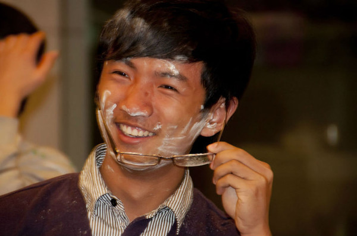
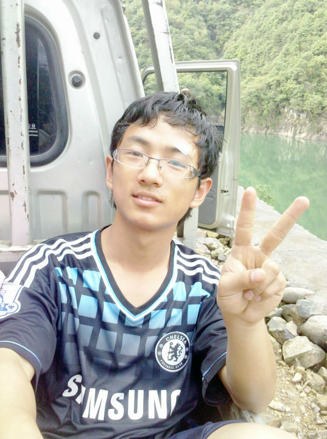
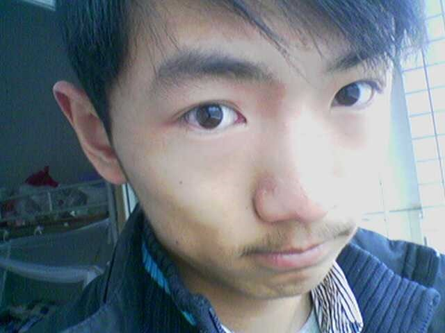
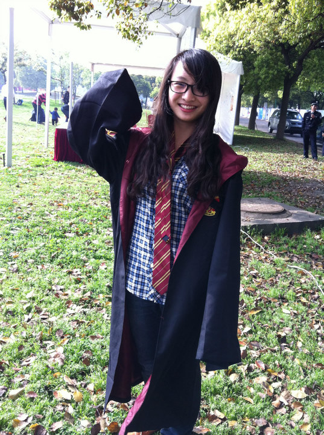
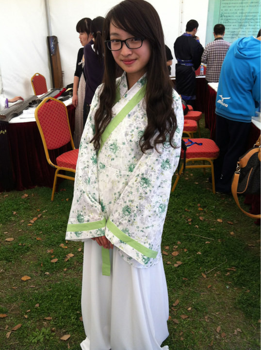
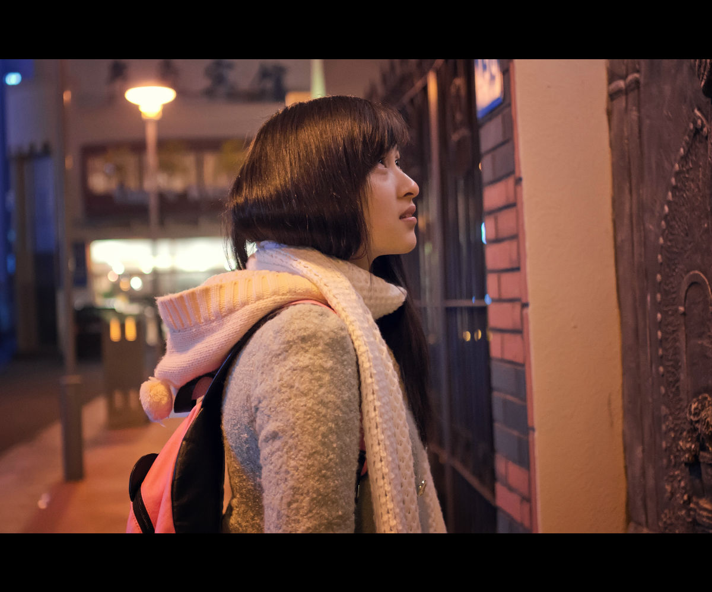
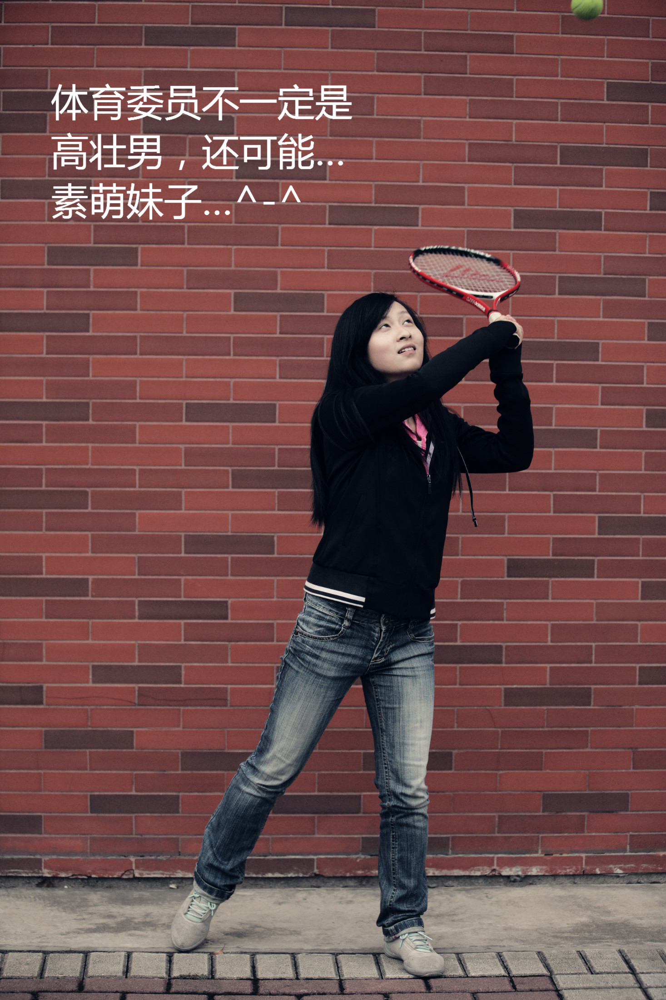

发信人: tankie(妇联主席恩~), 信区: outdoor
标 题: 野外生存协会部长团爆No.1弹の组织部
发信站: 饮水思源 (2012年05月29日00:01:08 星期二)
野协将在下学期度过自己的10周岁生日，届时会有很多很多的活动等着大家哦~敬请关注，
喵~
野外生存协会5月27号进行了本学年的换届会议，新的面孔，新的活力，全新的野协部长团
将展现在大家面前。在接下来的5天时间，野协的五个部门将依次出现在大家面前，究竟新
一届的野协长什么样呢？敬请期待！
第一个部门是新成立的组织部。
部门介绍：多年以来，野协一直是交大的五星社团，会员干事人数都在逐年增长当中。为
了把野协从现有的规模更加提升一个档次，组织部出现拯救世界和平了。
部门宗旨：对内创造野协文化，对外推广野协品牌
部门成员：部长：唐珂
副部长：刘卉
部长助理：刘逸芳
——————————————分割：团爆第一波———————————————姓名
：唐珂（大学里大多数都叫我小丢哈，这里有没有人听说过咩？）
性别：男（爱好女，恩。我不是基佬）
F11小朋友一枚，等到下一届小朋友来我就不用当老幺了，恩~
 screen.width - 200){this.width = screen.width - 200}">
现在的人人头像，去年冬至的时候照的….目测是个很有喜感的小朋友….
 screen.width - 200){this.width = screen.width - 200}">
天然呆无误o(>_<)o
screen.width - 200){this.width = screen.width - 200}">
去年的wakawaka，后来被弄成最炫交大风…然后黑黑的腰力很好的小伙……
 screen.width - 200){this.width = screen.width - 200}">
最后一张，我不是小受，我曾的不是o(>_<)o
最后一句，很重要的~
可摘╮(╯▽╰)╭
——————————————团爆第二波——————————————————
安泰 经院 奔奔就是我，我就是奔奔。
废话不说，直接上图吧
 screen.width - 200){this.width = screen.width - 200}">
screen.width - 200){this.width = screen.width - 200}">
 screen.width - 200){this.width = screen.width - 200}">
备注：欢迎小妹妹们过来让姐姐玩玩啦~受受的蜀黍也是可以哒
——————————————团爆第三波——————————————————
未满19天秤女
安泰经院11级
艾迪：evill
身高体重什么的~~大家就目测吧~~
嗯，怎么形容呢？那就一句话吧~~“退可卖萌，进可女王。”~~吼吼！！
喜欢的男生类型~：瘦瘦的 高高的 帅帅的 看起来受受的（注意只能是看起来受受的哟~还
是要有气度的哈）
备注：不可摘~囧~
下面上图：
Pic1：这张照片貌似爆过咯~~~某次和几个文艺青年出街照的文艺照~~
 screen.width - 200){this.width = screen.width - 200}">
Pic2：哇咔咔~~准备班风大赛的时候拍的，自己p的图哟~~文字是不是很赞~~
 screen.width - 200){this.width = screen.width - 200}">
Pic3：某次ktv别人偷拍的，咳咳~~
screen.width - 200){this.width = screen.width - 200}">
Pic4：最后一张~~淑芬课无聊的自拍咯~~前置摄像头像素有点低~~囧~~
screen.width - 200){this.width = screen.width - 200}">
呐~组织部的团爆今天就到此为止了。顺便预告一下明天会由我们装备部长高富帅领衔的装
备部众白富美们闪亮登场！
敬请期待啦啦~
--
喵呜~喵...喵喵~
喵！
喵喵喵~
喵喵！
※ 来源:·饮水思源 bbs.sjtu.edu.cn·[FROM: 183.192.198.239]
|